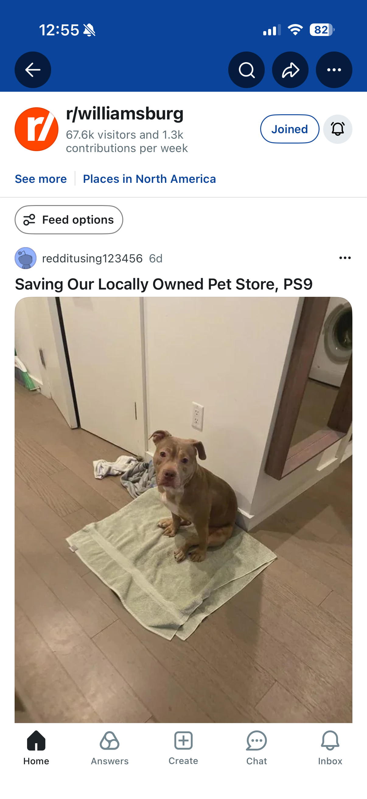
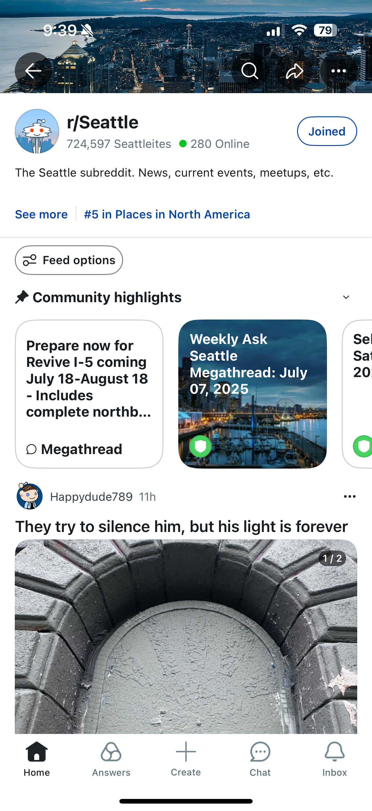

From one-off banner to consistent on-ramp

One-off banners. Header had no consistent way to surface notifications, opt-ins, or updates. Each subreddit team built ad-hoc solutions.

Standard on-ramp. Below the banner, every subreddit gets a consistent slot for notifications, joins, and pinned updates — built once, deployed everywhere.